Rabbits, serrated tussock, foxes and deer. Forty years of Landcare. And what the network takes on in 2027.
Four of the eleven articles here deal with the pests costing this district the most, in roughly the order they cost it: foxes, deer, rabbits and serrated tussock. Two of those are seasonal, and the window on both is open now rather than in spring.
The rest covers where the network has been since autumn. A demonstration farm at Tallarook that is structurally barred from making money, seedlings raised in strangers' backyards, a petition that made it into the Council chamber, and the machinery two of our member groups will put on your place.
The last article is a question rather than an answer. The 2027 program is not written, and what goes in it depends on what members tell me between now and the end of September.
Article 1
Forty years of Landcare
The catchment will celebrate the anniversary in Euroa this October, and I am collecting photographs and stories in preparation.
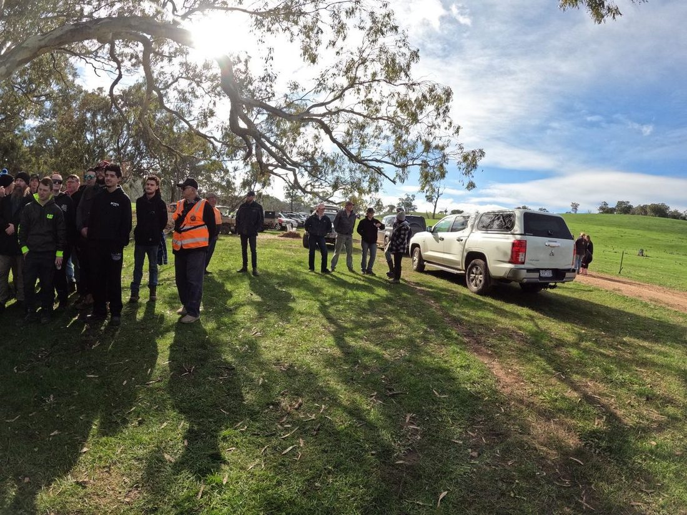
More than 120 volunteers put 3,000 plants in along Kurkuruc Creek over one weekend in June. South West Goulburn Landcare Network
Landcare turns forty this year, and the Goulburn Broken will mark the occasion with a single event for the entire catchment. Join us on Friday 2 October, from 5pm to 7pm at the Seven Creeks Hotel in Euroa, in the Tuscan Garden and Temple. There is no cost to attend, and everyone is welcome.
The Goulburn Broken CMA is organising the evening. Past presidents and facilitators from across the region are being invited back, some of whom were present at the very beginning, and each group will provide a brief update on its work. I will circulate the event flyer once it is available. If you would prefer not to drive alone, contact me and I will organise a car pool from Broadford or Kilmore.
Before then, I am seeking your photographs: planting days, working bees, before-and-afters, weeds, wildlife, or people leaning on a shovel, anything from the past forty years. Please email them to the network address. If the files are too large to email, let me know and I will reply with a Google Drive link for uploads. If possible, include the names of those pictured, as newspapers require full names when fewer than eight people appear in a photo. For inclusion in the 40 Years event, please submit materials by Friday 25 September.
There is also a competition. Landcare Australia is running Landcare Through the Lens, which accepts one photograph and up to 100 words on why it matters to you. The prize is $1,000, awarded to a Landcare group rather than an individual. Entries close at 11.59pm on Monday 31 August 2026, and the winner is announced on 15 September. Please send your photograph to the network address and I will submit it on your behalf. Entries I submit will be on behalf of South West Goulburn Landcare Network. Since the prize money cannot be paid to an individual, any winnings will be divided between the network and the photographer's group. Photographs must be taken in Australia, submitted as JPEG, TIFF or RAW files between 1MB and 10MB, and include permission from anyone recognisable in the image. AI-generated images are not accepted.
Planting days, working bees, before-and-afters, weeds, wildlife, or people leaning on a shovel.
I am also seeking your stories. We have started working with the local press to share our experiences. The Seymour Telegraph is publishing our material, and Seymour Matters has offered to run full features attributed to the network. If you have a story about your years in Landcare, how your group began, a paddock you have seen change, or someone who taught you something valuable, please send it to the network address or contact me and I will help write it up.
Lyndale Park at Tallarook is our demonstration site, and its ownership structure is the reason it works.
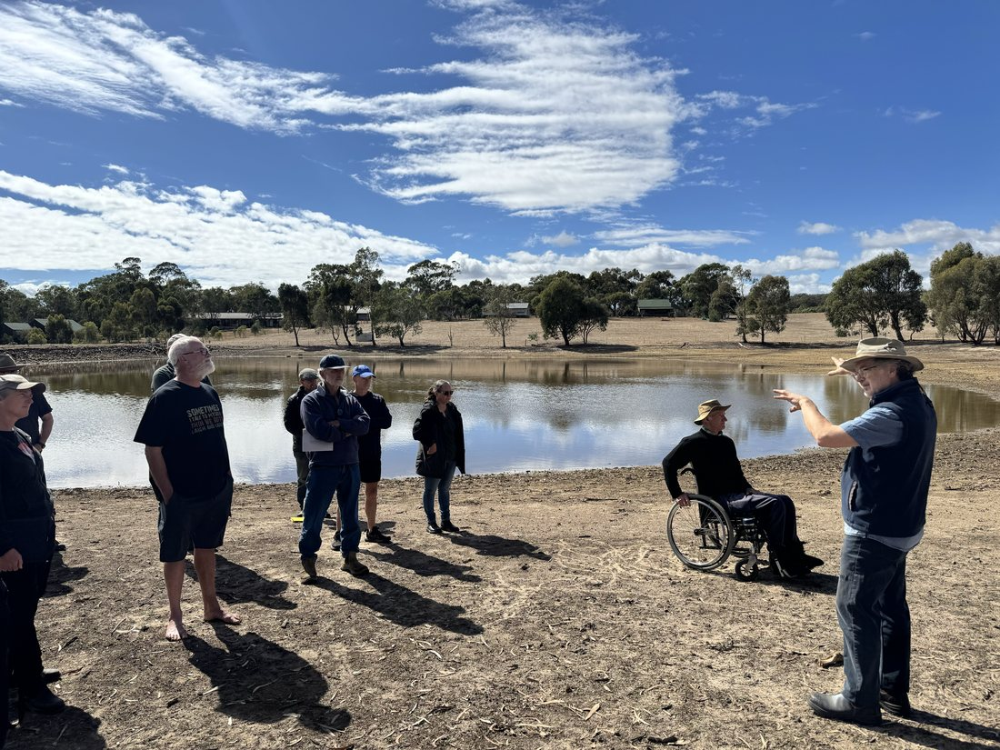
Participants at the dam, Lyndale Park farm dams field day, 2025. South West Goulburn Landcare Network
Many members may not have heard of Lyndale Park, so here is an introduction. Located on Tallarook-Pyalong Road, the property covers just over 200 hectares with 2.6 kilometres of frontage to Sunday Creek. Lyndale Park describes itself as a village farm. When you buy in, you purchase a house lot outright and, through the Owners Corporation, a thirtieth share of the property. Thirty households, one farm, a professional farm manager, and cattle and sheep on agistment. This model has been running for more than thirty years.
What matters most for us is how this structure shapes decision-making. The property is not set up to return a profit to anyone, and no one is trying to increase a gross margin. Every decision about lime, fencing, water or stock is based on a single test: does it leave the land in better condition than it was found? This is an unusual approach to farming, and it is why Lyndale Park is such a valuable demonstration site. You get to see what land management looks like when the payback period ceases to matter.
Since 2024, Lyndale Park has served as our demonstration site under the Goulburn Broken CMA's Nature Services for Ag program, funded by the Australian Government's Natural Heritage Trust. In 2024-25, works included 600 metres of fencing to retire 19 hectares from grazing, another 190 metres to exclude stock from Sunday Creek, applying lime to 11 hectares, sowing 16.3 hectares of multispecies fodder crop, and installing a reticulated trough system to move livestock off the dams. The previous year's efforts added 450 metres of fencing to extend the wildlife corridor and reduce grazing pressure on a drainage gully, 300 metres to fence a dam, 11 hectares re-established to phalaris, cocksfoot, fescue and sub-clover, plus four additional troughs.
A notable project is the dam. An old, degraded dam is being converted into a wetland, with small retaining structures to hold water and keep the surrounding soil moist, followed by planting around the edges. The gully, which was patched years ago, has since cut around the original works. Stabilising the table drains that feed it is planned for the coming year.
You get to see what land management looks like when the payback period ceases to matter.
Baseline soil tests were conducted across the farm in May 2025. Results showed acidity, pronounced in some paddocks, with organic carbon at reasonable levels but phosphorus and sulphur below what productive perennial pasture requires, hence the application of lime. None of this is unusual for the district. Soils throughout the mid and upper Goulburn Broken are naturally acidic and have acidified further since clearing. In the upper catchment about 20 per cent of red duplex soils sit below pH 4.5, and in the mid catchment about 60 per cent of yellow duplex soils fall between pH 4.5 and 5.0. Acidity is one of seven key soil health issues identified for this catchment.
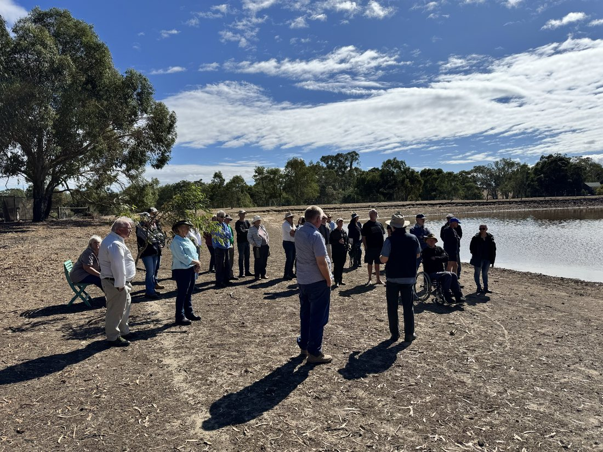
The dam at Lyndale Park. An old, degraded dam here is being converted into a wetland. South West Goulburn Landcare Network
Here is where it gets interesting. The same low phosphorus level that is a problem for pasture is nearly ideal for revegetation. This area is part of the South West Goulburn landscape zone, with pre-European vegetation of grassy woodland and Box Ironbark forest, and Creekline Grassy Woodland along the minor streams. Across the Goulburn Broken catchment, 96 per cent of Plains Grassy Woodland has disappeared or been highly modified since European settlement. Key species, Kangaroo Grass, spear-grasses, chocolate lilies, gold-dust and golden wattle, beneath grey box and yellow box, evolved on low-nutrient soils. In remnant grassy woodland, the most nutrient-rich topsoils are the ones dominated by exotic annuals, and soil nitrate tracks closely with how many of those annuals are present. For this reason, the retired 19 hectares should remain unfertilised. Lime and superphosphate belong on the pasture side of the fence, nowhere near the biolinks. Same farm, opposite prescriptions, and soil tests draw the line.
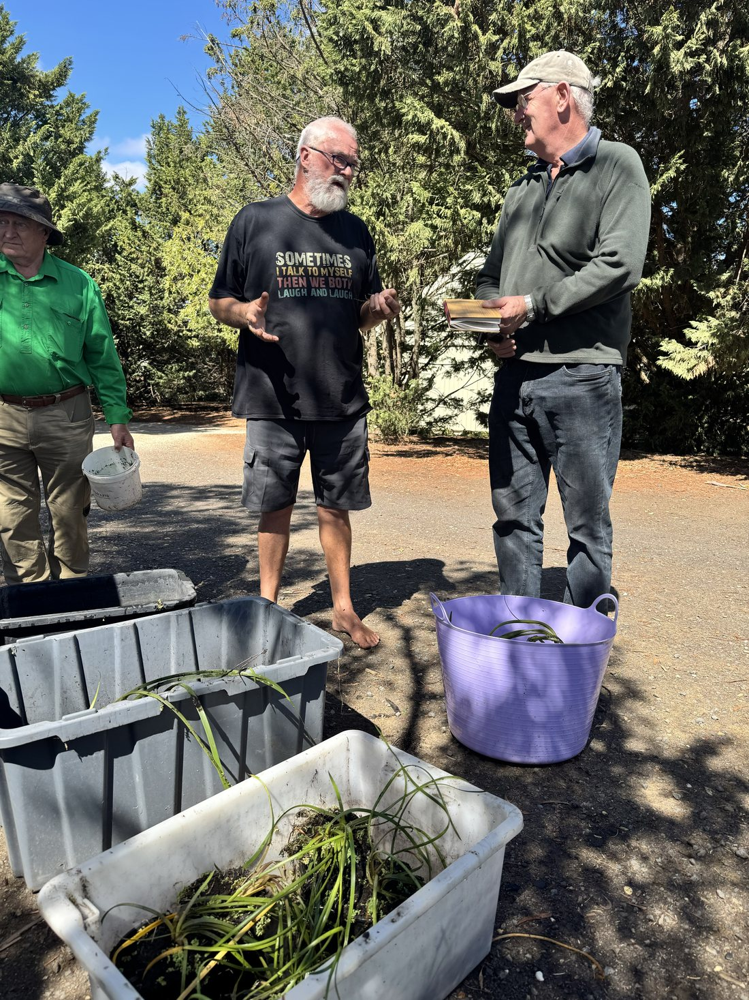
Brian with water ribbons at the Lyndale Park field day. South West Goulburn Landcare Network
Members are welcome to join on working days. Lyndale Park is partnered with our Dabyminga group, and we are organising student working bees at the site. Keep an eye on this newsletter, any activities at Lyndale will be announced here first. Or give me a call.
TreeProject's volunteers raise seedlings at home for landholders they may never meet. Orders for the 2027 season close on 30 September.
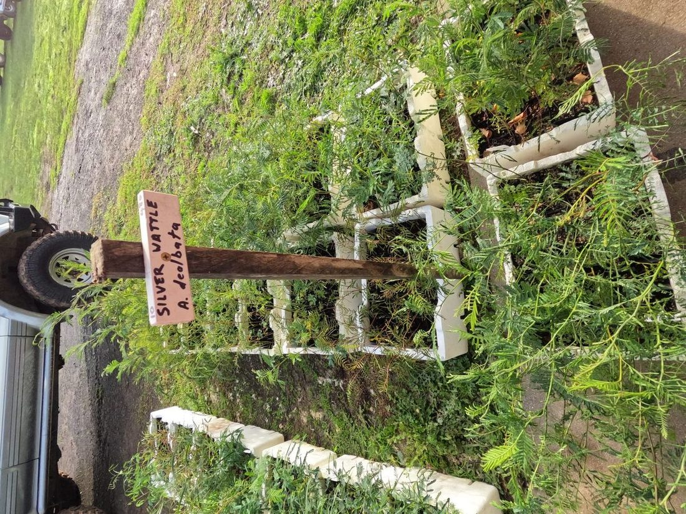
Tubestock raised by TreeProject volunteers, going into Glenaroua country. South West Goulburn Landcare Network
TreeProject has been growing indigenous seedlings for Victorian landholders and Landcare groups since 1989. Volunteers receive training and a kit containing seed, soil, sand and forestry tubes, then raise the plants in their own backyards. Each kit grows 336 seedlings. Growers nurture the plants for up to six months over spring and summer; in winter, the landholders and Landcare groups who ordered them collect the seedlings for planting. At the end of the season, the tubes are returned to the depot to be washed, sterilised and refilled.
It began when two friends, Maggie McLeod and Belinda Gross, pledged to plant a million native trees, a goal they reached within fifteen years. TreeProject has now sown over two million seedlings, and in 2023 alone, 361 growers raised 140,000 plants across 189 species.
The Glenaroua Land Management Group placed an order last September, and TreeProject volunteers raised our tubestock. Three thousand plants were put in along Kurkuruc Creek on 20 and 21 June, with more than 120 volunteers lending a hand.
Some of those seedlings were raised by residents of an aged care home in Bunyip. A family member wrote to us in April to say her father was outside with his watering can every morning and evening, giving the plants extra attention on hot days. The residents became fully invested in their progress: how they were growing, how many survived, and whether they were thriving. Those trees found their way to Glenaroua.
Some of those seedlings were raised by residents of an aged care home in Bunyip.
Orders for the 2027 season close on 30 September. Seedlings ordered now will be sown over summer and planted out the following winter. If you want to choose your species, now is the time. Decide in the next eight weeks, not next autumn with a shovel in hand.
Which brings me to an offer. TreeProject's minimum direct order is 500 seedlings, more than many people need, but Landcare group members can submit smaller requests and have them combined into a single group order. I would like to coordinate a combined SWGLN order for our next planting project. If you want fifty or a hundred plants, let me know roughly how many, what you want them for (shelterbelt, creek line, gully, bare paddock corner), and your location. One group order is much easier than twenty separate ones.
We are also inviting members to tie their seedling orders to a Landcare donation, helping cover the costs of projects across the network. This is an option, not a requirement, and I would like to know what members think. Either way, register your interest with me before 30 September.
Saturday 29 August, Upper Plenty. Free, half a morning, and you go home with a bag of gorse spider mites. Presented by Upper Plenty Merri Catchments Landcare Group.
Cubs are in the dens now, and this is the only time of year a fox stays in one place.
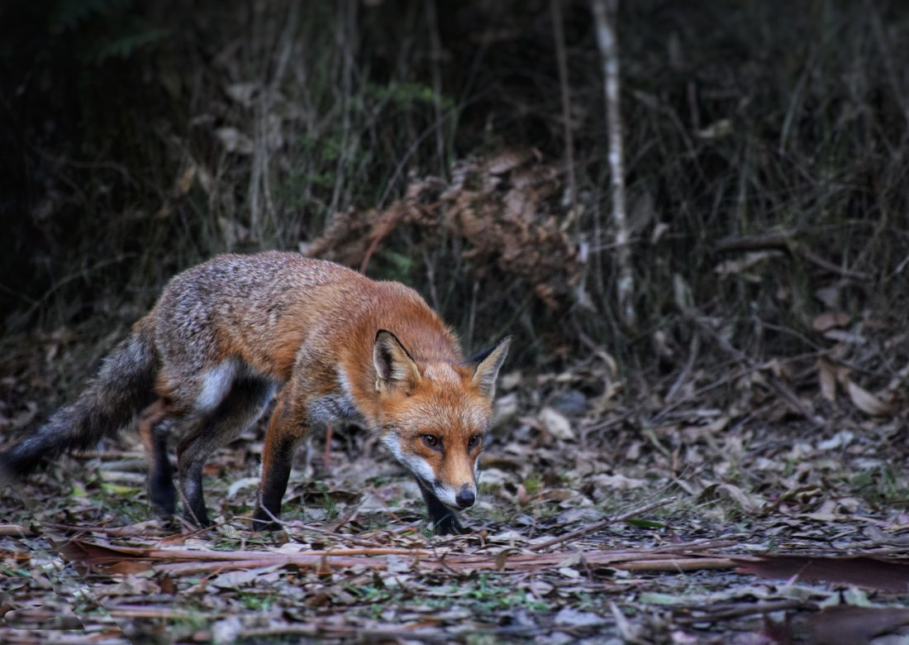
A red fox in the Great Otway National Park, Victoria. Shylu007 · CC BY-SA 4.0
A fox in Australia covers more ground in a night than most people own. Radio-tracking of ten foxes across south-eastern Australian farmland found home ranges averaging about 1,180 hectares, with animals walking nearly ten kilometres in a single night. Earlier work in central Victoria put rural home ranges at five to seven square kilometres each. Put simply, if you manage a hundred acres, you do not have a fox problem on your property. You have a share of someone else's.
That is why one-off efforts are disappointing. On a New South Wales farm, an intensive shooting campaign killed 47 foxes in twelve nights but only reduced density from 4.18 to 3.26 foxes per square kilometre. Isolated programs rarely reduce fox numbers, even when effort is high. Sustained, coordinated control is a different story. Nine years of fortnightly baiting at Glenelg Ark in western Victoria saw long-nosed potoroos detected at twenty sites where foxes were controlled, versus just seven where they were not. Across more than a thousand New South Wales properties, lamb survival was higher on farms whose near neighbours also participated.
Which brings us to August. Agriculture Victoria is clear: fumigation and den destruction should take place in August and September, as cubs are born then and the vixen is only likely to be killed in the den during the first three weeks after birth. She starts digging out dens in April and May and keeps two or three alternatives in reserve if the natal den is disturbed, so check your dens in May and June and again in August and September. Confirm a fox is using the den, and not a native animal, by looking for scats, tracks and prey remains. Block the entrance and every escape hole with soil, and destroy the den afterwards if possible. Do not shoot during a baiting program: it disrupts fox behaviour and reduces the effectiveness of baiting. Shooting also selects for young, inexperienced animals, which boosts breeding and survival among those left, and increases the rate at which foxes move in from outside.
A carbon monoxide product is the only den fumigant registered for fox control in Victoria, and no special training or licences are required to use it in this state. Follow the product label. Fumigation suits local problems, such as a den near a lambing paddock or poultry shed, and is used between August and October while the vixen and cubs are confined.
If you manage a hundred acres, you do not have a fox problem on your property. You have a share of someone else’s.
Baiting with 1080 or PAPP requires an Agricultural Chemical User Permit with the relevant endorsement, or a commercial operator's licence with a vermin destroyer endorsement. You must give written notice to neighbours at least 72 hours before baiting and again every six months, and post signs at every vehicle entrance for four weeks after finishing. Ground baits may not be laid within 150 metres of a dwelling, 20 metres of water, or five metres of a boundary fence. Shooting on your own land needs a firearms licence but no permit. The fox is a declared established pest animal under the Catchment and Land Protection Act 1994, which requires landholders to take all reasonable steps to prevent its spread and, as far as possible, eradicate it.
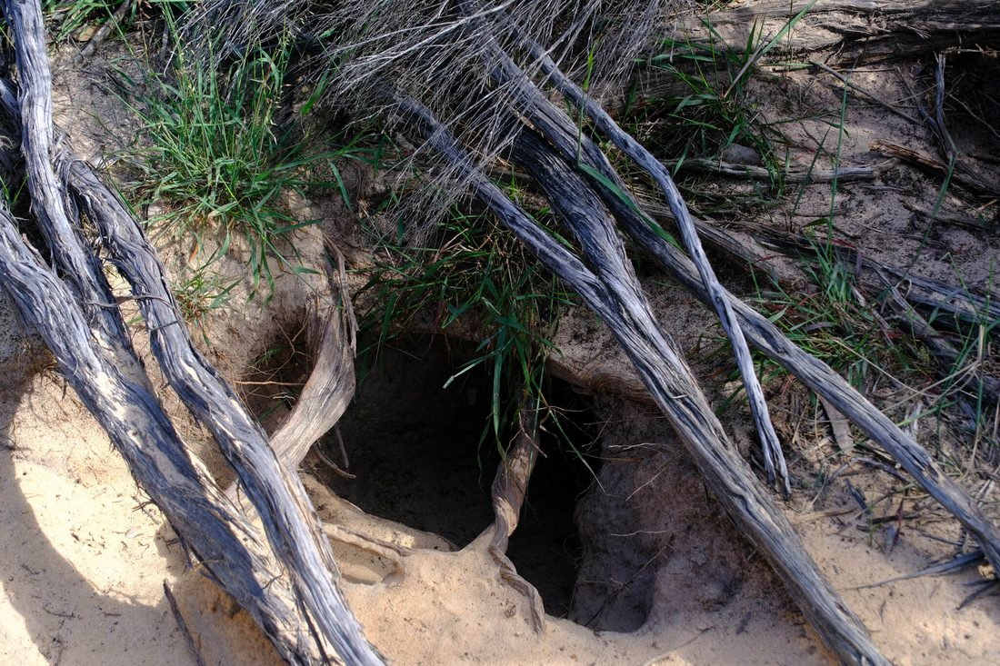
A fox den entrance in the Little Desert, Victoria. Look for the spoil heap, then check for scats, tracks and prey remains before you do anything. Peter Crowcroft · CC BY 4.0
Trapping is useful where baiting is not available and shooting is not practical: small holdings, urban fringe blocks, places where a neighbour's dogs, a waterway or a dwelling rule out 1080, and for individual animals that have learned to take poultry or lambs. It is mainly for nuisance animals and is not effective as a general fox control method.
Victoria allows large padded-jaw leghold traps for foxes in approved areas, with the landowner or occupier's consent. Jaw spread must be between 10.1 and 14 centimetres. The jaws must be smooth, offset so at least six millimetres of metal-to-metal gap remains when closed, and padded with commercial rubber pads made for that trap. The anchor chain must have a shock-absorbing spring and a swivel at each end, attached to the centre of the baseplate. Pan tension must be adjustable to keep out smaller non-target animals. Traps must be checked at least every 24 hours and no animal may be left alive in one for longer. In urban areas, meaning residential allotments of 0.4 hectares or less, you need Ministerial approval. A trapped fox must be humanely destroyed as soon as possible, and padded-jaw traps should only be used where the animal can be shot while still held. Serrated steel-jawed traps cannot be sold, set or used for any animal.
Set traps along tracks, trails, scent posts and around carcasses, but keep them away from fences, trees and shrubs where a trapped animal could tangle a limb. Set traps at the end of the day and clear them first thing. Camouflage the trap with grass and leaf litter, leaving ten to fifteen centimetres clear over the pan. Lure with fox urine, faeces or a commercial preparation such as synthetic fermented egg, placed behind the trap on a clump or stick so the fox must step on the pan to reach it, with a handful of meat dusted with soil. Record and mark every trap location, and let someone else know where they are in case you cannot clear them.
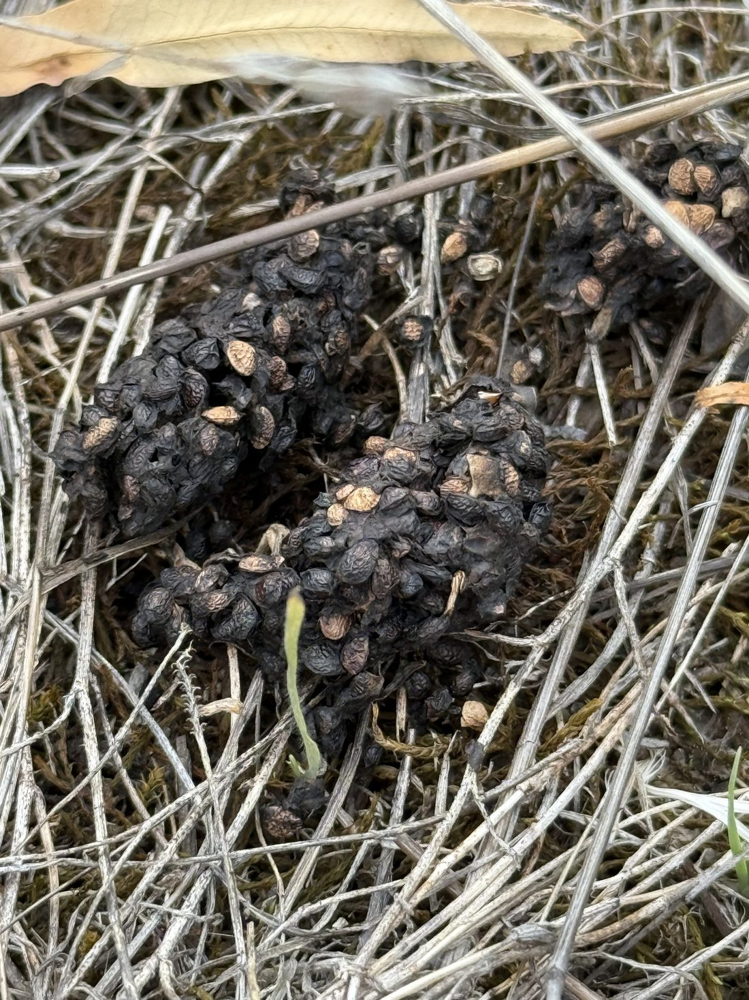
Fox scat near Maldon, Victoria. Tapered, twisted and full of fur and seed. This is what tells you the den is not a native animal. Nicole Kearney · CC BY 4.0
There is no fox trap loan scheme in this district. Mitchell Shire Council's Local Laws team lends cat traps under certain conditions, and that is it. Fox-sized padded-jaw traps can be bought from specialist Australian trapping suppliers who carry Victor Soft Catch sizes and deliver statewide. For Ministerial approvals or questions about trap specifications, contact Agriculture Victoria's pest line.
Coordinated control is what reduces fox numbers, and there is a good model just to our east. The King Parrot Pest Animal Cooperative runs an umbrella program across the King Parrot Creek catchment, reducing the impact of foxes and feral cats on agriculture and biodiversity. Remote sensor cameras are installed across participating properties, and the monitoring also provides biodiversity data, which helps fund the program. Chris Cobern, Landcare Facilitator at the Upper Goulburn Landcare Network, is the contact for this project. More detailed advice on collaborative control across property boundaries is available from him or others with experience.
In this district, rabbits still cause more damage than foxes or deer, to both production and biodiversity. Foxes rank second, with deer third and increasing. Among weeds, serrated tussock is the worst: it is regionally prohibited in the Goulburn Broken catchment and must be eradicated, not just contained. Blackberry and gorse are regionally controlled, and both harbour rabbits and foxes, so clearing them counts twice. The articles that follow take each of those in turn.
Fox numbers here will not fall because individuals act alone on their own boundaries. They fall when neighbours run the same program at the same time across a contiguous block of country. I will connect anyone who wants to collaborate on these pest species, whether that is a whole group or two adjoining farms.
Some terms used above
1080
sodium fluoroacetate, a poison used in pest animal baits.
PAPP
para-aminopropiophenone, an alternative poison bait for foxes and wild dogs.
Pan tension
the pressure needed to spring a leghold trap. Adjusting it is what keeps smaller non-target animals out.
Ministerial approval
written permission from the Minister for Agriculture, required for trapping in urban areas.
Deer are the only large feral animal Victoria still protects
You can shoot the deer damaging your property today. What you cannot get is any help from government or agencies.
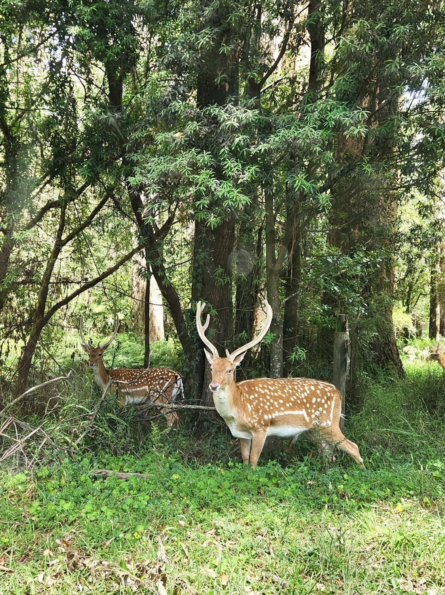
Fallow deer at Sherbrooke, Victoria. Note the flattened, palmate antlers and the spotted coat. Rosanna Dedecius · CC BY 4.0
Let us start with what actually helps landholders. Every deer in Victoria is declared wildlife under the Wildlife Act 1975, and six species are further declared game by the Governor in Council. Another Governor in Council Order declares deer unprotected on private property, so you may destroy deer causing damage or injury to your property, crops or livestock, at any time of year, with no game licence and no Authority to Control Wildlife needed. All you need is a firearms licence. Spotlights are allowed on your own land. Minimum calibres apply: .243 inch and an 80-grain projectile for fallow and chital; .270 inch and 130-grain for sambar, rusa and red. Anyone acting for you, including a manager or employee, must carry your written, dated permission. Deer must be destroyed humanely. You can keep the meat for your own use. Hog deer are the exception and still require a permit.
So the practical position is better than most landholders assume, but the legal situation remains bizarre. Rabbits and foxes are declared established pest animals under the Catchment and Land Protection Act 1994, which places a duty on every landholder to prevent their spread and, as far as possible, eradicate them. Deer have no such declaration. All other mainland states have declared deer a pest. Victoria has not, so there is no landholder duty, no statutory basis for coordinated action, and no funding stream. Peter Jacobs of the Victorian Deer Control Community Network put it plainly: landholders receive no government support, funding or advice for control.
Compare this to rabbits, which most graziers understand well. Rabbit grazing pressure has been costed for decades in terms that matter on the ground: about 16 rabbits per hectare equals one dry sheep equivalent, or about 12 rabbits per DSE in higher-rainfall country. In other words, a single warren of 12 to 16 rabbits eats what one sheep eats. A paddock with 500 warrens is carrying 500 sheep before you run a single ewe. Nationally, rabbits were estimated to cost about $197 million a year between 2020 and 2021. Feral deer cost $91.3 million in 2021: $69.1 million to agriculture, $17.8 million to government management and research, and $4.5 million to vehicle and train collisions. On the published numbers, rabbits cost Australia roughly twice what deer do.
Those two figures are not equally solid. Rabbit impacts have been measured in paddock trials since the 1950s. Deer have been costed nationally for a single year, against a population still expanding, and there is no agreed DSE equivalent for them. One attempt to project forward put the cost to Victoria alone at $1.5 to $2.2 billion over thirty years if numbers are not reduced, the spread reflecting the discount rate applied rather than any uncertainty about the damage.
We are funded to restore understorey. The state is legally committed to maintaining an animal that destroys it.
The agricultural bill is the figure usually quoted because it can be counted. Lost pasture, a flattened crop, a wrecked fence and a smashed bullbar all leave a receipt. Suppressed regeneration does not. Nor does an understorey browsed out over twenty years, a pugged and fouled creek crossing, or a direct-seeding line that never grows above knee height. The authors of the Victorian projection said as much: impacts on biodiversity and ecosystem services like water purification would also likely impose enormous costs on the community, but are difficult to accurately put a dollar value to. The same caveat appears in the rabbit research, where many costs cannot be accurately estimated in financial terms. One assessment costed invasive species in Australia at a minimum of $389.6 billion since the 1960s, in 2017 dollars, and called even that a gross underestimate for the same reason. Every one of these numbers is a floor, not a ceiling, and what is left out is the part Landcare exists to protect.
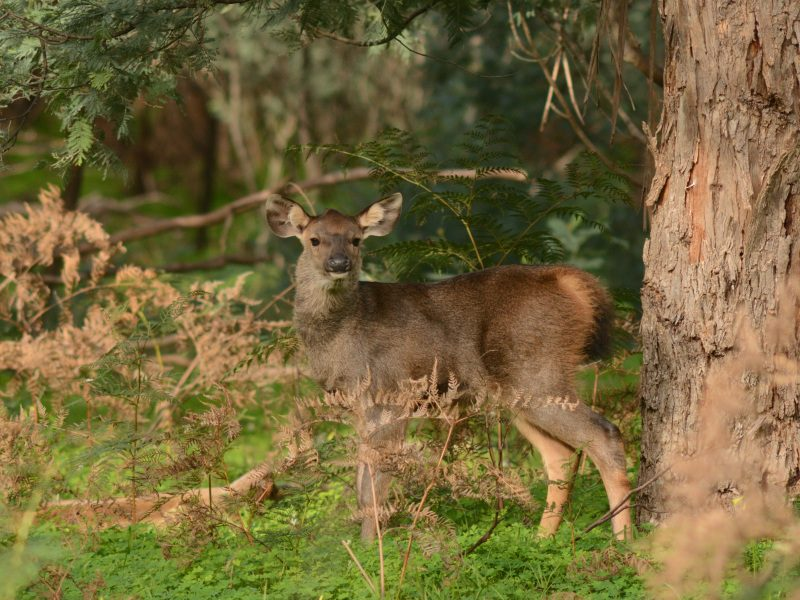
A young sambar stag at Doncaster East. Sambar are the largest deer in Victoria and take the heavier minimum calibre. Wooden Box · CC BY-SA 4.0
No one seriously contests that the harm is real. The National Feral Deer Action Plan 2023-28 identifies a minimum of 25 threatened plant species, five threatened animals and thirteen threatened ecological communities at risk from feral deer. Under Victoria's Flora and Fauna Guarantee Act 1988, the reduction in biodiversity of native vegetation by sambar has been a listed potentially threatening process since 2007.
Here is where things stand. In October 2025 the Victorian Government responded to the independent review of the Wildlife Act. The review had recommended that the government pursue a declaration listing all deer as a pest animal under the Catchment and Land Protection Act 1994. The government marked that recommendation not supported, and the reasoning turned on preserving deer hunting. The Australian Deer Association welcomed the decision, arguing that a loss of game status would have cost more than 50,000 recreational deer hunters access to public land and stripped the Game Management Authority of much of its revenue. That argument carried the day. The Outdoor Recreation Victoria Bill 2026, still before Parliament, merges the Game Management Authority into a new body and leaves the game status of deer unchanged.
So an animal whose browsing is a listed threatening process still holds a legal status based on being worth conserving for sport. That is the conflict. For this network, it is not abstract. Every tree guard, every seeding line, every fenced creek frontage we install is an investment in regeneration a deer herd can undo in a season. We are funded to restore understorey. The state is legally committed to maintaining an animal that destroys it.
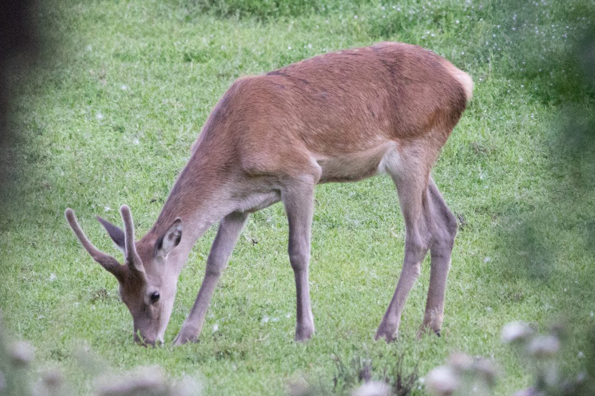
Red deer at Halls Gap, Victoria. Public domain (CC0), via iNaturalist
Our own representatives have said little on record. Annabelle Cleeland, Member for Euroa, has not mentioned deer in the Victorian Parliament. Her one reported reference came in January 2025, when she drew attention to Parks Victoria's own service schedule classifying invasive animal control as something to do only if separately funded. She has since called for a statewide review of pest management on unused public land, though for rabbits, not deer. Sam Birrell, our federal Member for Nicholls, has not mentioned deer in federal Hansard. Of the five Northern Victoria members in the Legislative Council, Gaelle Broad has come closest: in a constituency question on 17 June 2026, she asked the Minister for Agriculture what further action would be taken on weeds and pests such as foxes, deer, pigs, wild dogs and rabbits on Crown land, citing damage to agricultural productivity and native vegetation. The Nationals have no published policy on game status. Senior Nationals figures have consistently argued in Parliament that deer are a serious pest and that expanded recreational hunting is the answer. Expect to meet that argument rather than be surprised by it.
This is why writing matters. There is no open inquiry, live consultation or current Victorian petition on deer, so a letter to your local member is the avenue that exists. A letter will not change a law by itself. But it puts a named constituent, with an address in the electorate and a paddock full of evidence, on the record against a position the member has not had to defend locally. Enough letters make that position expensive to hold.
Write to Annabelle Cleeland. Write to your Legislative Council members, Gaelle Broad and Wendy Lovell. For anything related to the National Feral Deer Action Plan, write to Sam Birrell. Keep it short and personal. Say where you farm and how long you have been there. Describe what deer have done on your place: the trail camera count, lost seedlings, damaged fences, ruined creek crossings. Then ask for three things: declare deer an established pest animal under the Catchment and Land Protection Act 1994; remove game status so control is not tied to hunting seasons; and fund coordinated control across property boundaries, because deer roam thousands of hectares and cannot be managed one paddock at a time. Ask for a reply and the member's position in writing. Send it before the state election on 28 November. If enough members want to go further, a Victorian e-petition can be lodged through the Legislative Assembly and we will help draft one.
Rabbits are the district's most damaging pest. Here is the arithmetic behind that claim, and the practical planning behind a successful summer campaign.
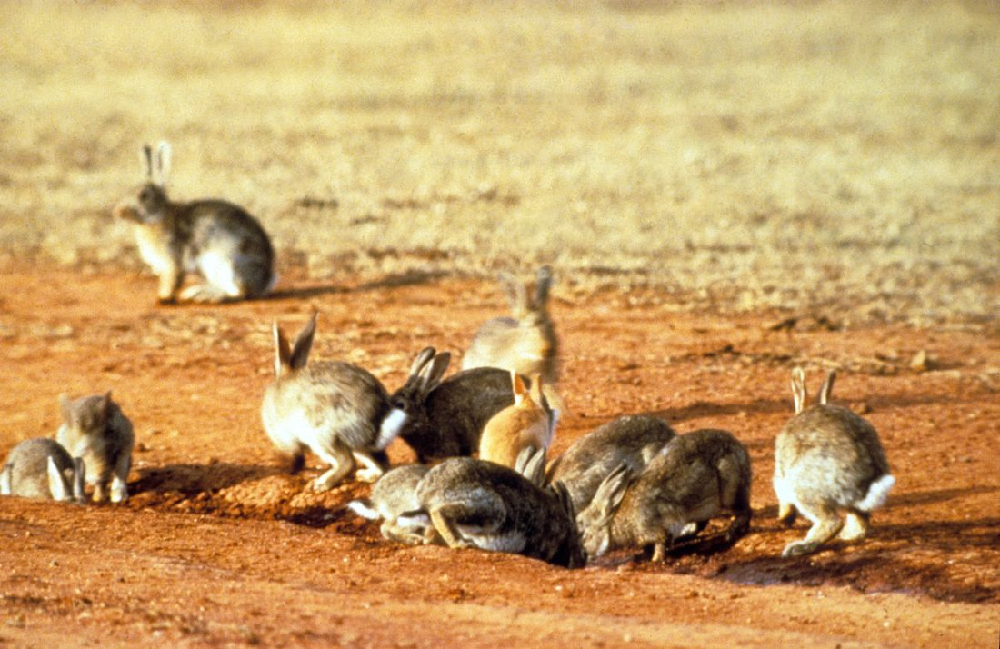
Rabbits feeding on ground grazed back to bare soil. Liz Poon, CSIRO · CC BY 3.0
Rabbit grazing pressure has long been measured in stocking terms. About 16 rabbits per hectare eat as much as one dry sheep, and in higher-rainfall country like ours the figure is closer to 12. Put simply, a single warren of 12 to 16 rabbits eats what one sheep eats. Count warrens on your property and you have counted the phantom flock you are already carrying. Nationally, rabbits were estimated to cost $197 million a year between 2020 and 2021. Like the fox, the rabbit is a declared established pest animal, and every landholder has a duty to control them.
Here is what the research shows: spring is the wrong time to bait. Agriculture Victoria's integrated program, known as the rabbit recipe, works the other way around. Bait in late summer, when feed is short and disease and natural mortality have already knocked numbers down, and a rabbit will actually take an oat. Rip warrens straight after baiting, while numbers are lowest and the soil is friable. Fumigate survivors and reopened burrows through autumn and winter, when moisture seals burrows properly. Baiting in spring is wasted effort: feed is everywhere, breeding is in full swing, and baits just compete with green pick.
August to October is for planning, and most rabbit programs fail for lack of a plan. Walk your property and map every warren, using RabbitScan to record locations from your phone if that suits you. Fumigate any active burrow now, while the soil is damp enough to seal, remembering that fumigation alone rarely holds rabbit numbers down. Clear the harbour: blackberry and gorse are both regionally controlled weeds and both shelter rabbits and foxes, so clearing them counts twice. And talk to your neighbours, because ripping a warren on your side means little if occupied warrens remain next door.
Shooting gets its usual verdict. The national standard operating procedure is blunt: shooting is ineffective in significantly reducing rabbit populations or even maintaining them at low levels. Spotlighting is a count, not a control program.
Count warrens on your property and you have counted the phantom flock you are already carrying.
Permits are simpler than many think. Ready-made pindone oat and carrot baits need no permit. Mixing your own pindone, or using aluminium phosphide for fumigation, requires an Agricultural Chemical User Permit with the right endorsements. 1080 also needs the permit endorsement and an accredited supplier.
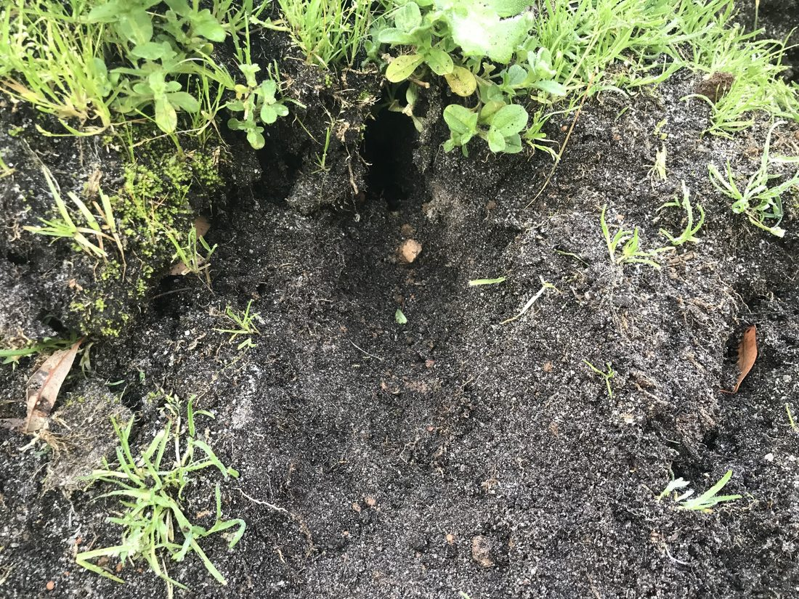
Burrow entrances cut into a soil bank. Map every one of these before summer, because this is what the ripper needs to find. Ann Bentley · CC BY 4.0
Do not wait for calicivirus. No new release is scheduled. The K5 strain, released in 2017, remains available, averages a 34 per cent knockdown, and can be purchased for private use from the New South Wales virology laboratory. Use it as one ingredient in the mix above.
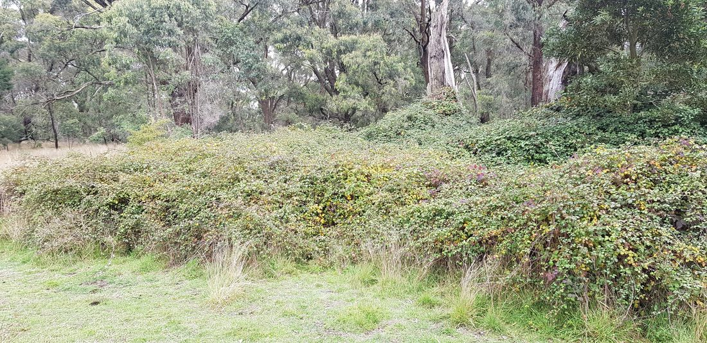
Blackberry at Millbrook, Victoria. Clearing harbour like this counts twice, against rabbits and foxes both. Reiner Richter · CC BY 4.0
Rabbit numbers only fall when neighbours coordinate across the landscape, and summer is the time to start. Email the network with your property address and I will map who else on your road or creek wants in. The Victorian Rabbit Action Network runs training and mentoring for exactly this kind of group effort.
In the Goulburn Broken, you are required to eradicate this grass, not simply contain it. The window to act before it flowers is open now, and the hardest part is finding it.
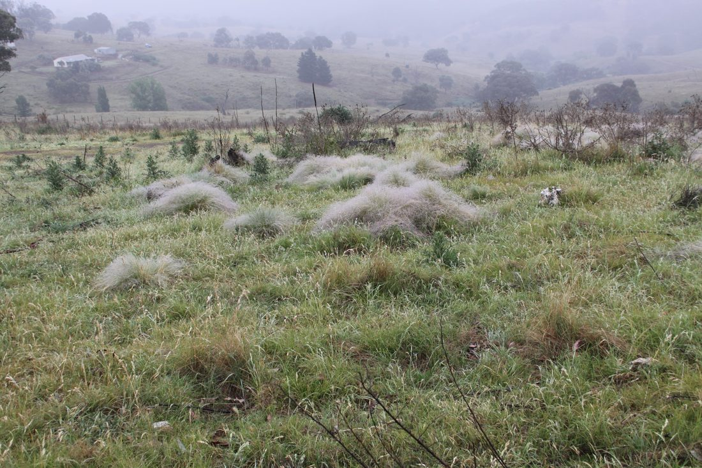
Serrated tussock scattered through a grazed paddock on a wet morning. Pale, drooping, and unmistakable once you know it. Harry Rose · CC BY 2.0
Serrated tussock is a regionally prohibited weed in the Goulburn Broken catchment, a different class from blackberry or gorse. Those must be kept from spreading, but under the Catchment and Land Protection Act 1994, serrated tussock must be eradicated. The reason is carrying capacity. A pasture supporting 7 to 15 dry sheep equivalents per hectare can drop to half a DSE when heavily infested, as stock will not eat serrated tussock. It is a Weed of National Significance, and this network has warned members about it since 2012. Seed shed that year can still germinate today, remaining viable in the soil for up to 15 years.
The challenge is that it looks like any other grass. Three field tests can separate serrated tussock from the native grasses it hides among. First, roll a leaf between your finger and thumb: serrated tussock rolls smoothly, like a needle, while the native tussocks feel flat. Next, run your fingers down the blade from tip to base and you will feel the fine serrations that give the plant its name. Finally, check the ligule, the small flap where blade meets sheath: on serrated tussock it is white, hairless and about a millimetre long, while on most of the lookalikes, snowgrass, silver tussock and wallaby grass, it is hairy.
In August and September, the plant is at its least conspicuous, frost-bleached to a pale gold while the pasture around it greens up. Over summer, it reverses: serrated tussock stays green as everything else dries off. In late spring, an infested paddock takes on a purple haze as seed heads ripen and droop over the tussocks, and by then you have lost the year. Flowering stems can appear as early as late winter, and seeds ripen eight to ten weeks later. Once ripe, the whole seed head snaps off and blows away, travelling up to several kilometres. A dense hectare can shed more than two tonnes of seed in a single year.
Control is much easier when numbers are low. For isolated plants, chip them out with a mattock, removing the whole base, and bag and burn anything in flower or seed. For larger patches, spot spray. Glyphosate works from May to October, kills in one to four weeks and leaves nothing in the soil, but it will kill whatever it touches, and bare ground then invites the next generation of seedlings. Flupropanate is the specialist tool, slow acting but remaining in the soil for two to three years to stop germinating seed. It damages native grasses too, and grazing withholding periods can last months for anything beyond spot spraying, so always read the label. Never let lactating stock graze treated areas. If preventing seed set is all you can manage, spray topping with glyphosate between mid August and mid October stops seed production without killing the plant. The working party's one non-negotiable: do not let it seed.
Most photos will come back as poa or spear grass. The one that does not is worth the whole exercise.
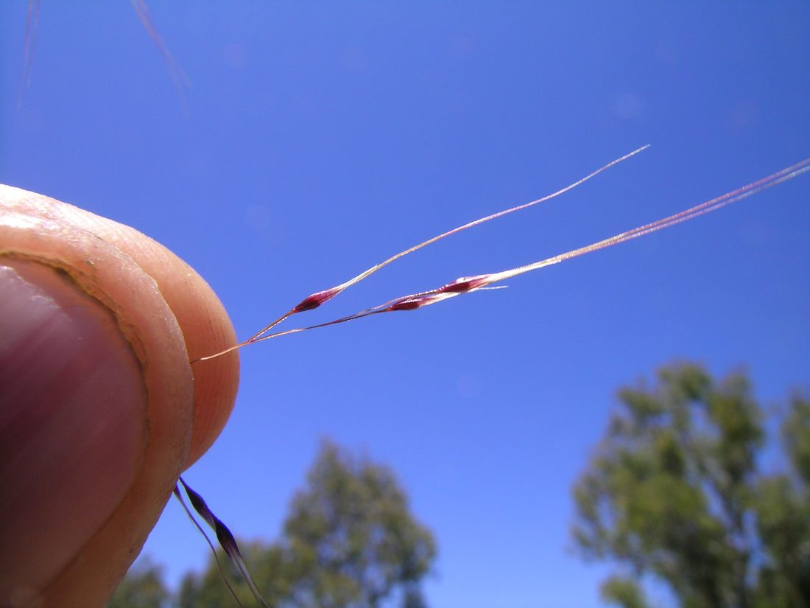
The spikelet, with purplish glumes and the long off-centre awn. Harry Rose · CC BY 2.0
So, one job before spring: learn the roll test, then walk your property, even just the back paddock or the laneway you usually drive past. If you find a tussock you cannot identify, photograph the whole plant, then close-ups of the leaf and ligule, and email them to the network address. I will let you know what you have and, if it is a problem, what to do about it. Most photos will come back as poa or spear grass. The one that does not is worth the whole exercise.
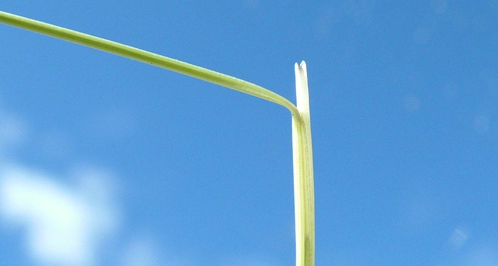
The ligule: a short white membrane where the blade meets the sheath, hairless, about a millimetre long. This is the feature that settles it. Harry Rose · CC BY 2.0
The two it hides among
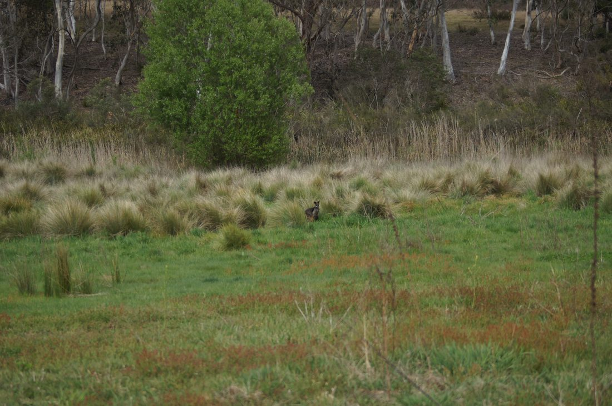
Silver tussock, Poa labillardierei. Bigger, coarser and greyer, and the leaf feels flat when you roll it. Harry Rose · CC BY 2.0
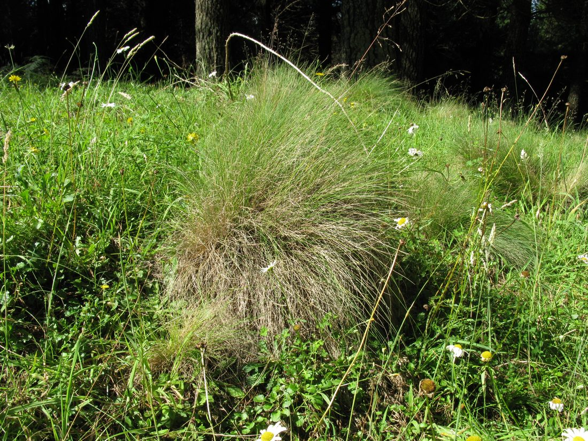
Snowgrass, Poa sieberiana. The hardest of the lookalikes, but its ligule is hairy where serrated tussock is not. Harry Rose · CC BY 2.0
Scaling Success: students on real country, work that gets done
SWGLN is now a delivery partner in a Future Drought Fund program that brings agriculture and natural resource management students onto working properties across our region.
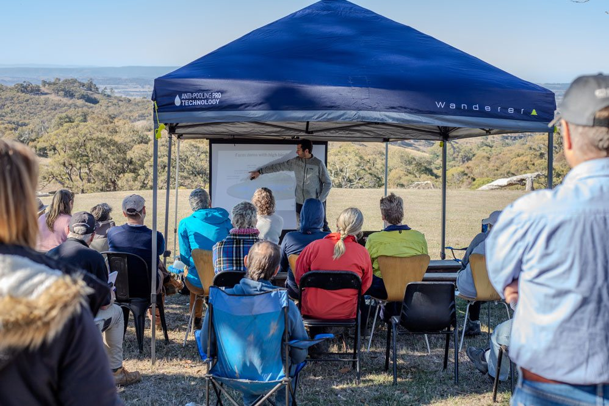
A field day under the marquee. This is roughly what three days on a working property looks like. South West Goulburn Landcare Network
Scaling Success is a training and extension program funded by the Australian Government's Future Drought Fund. Led by Up2Us Landcare Alliance at Mansfield, South West Goulburn Landcare Network is one of seven delivery partners running events across the Goulburn Broken catchment through to 30 June 2028. Kim Magnay, the Landcare Facilitator at Up2Us, coordinates the program across the networks.
The concept is simple: many people studying agriculture and natural resource management have never stepped onto a working farm or had an in-depth conversation with a farmer. They finish their courses with theory but little practical understanding. Scaling Success puts them on real properties for three days at a time, learning drought and climate resilience practices from those already doing the work. How a paddock is managed. Why a landholder made certain decisions. What it cost and what it returned.
This is not new ground. Up2Us and Gecko Clan Landcare Network ran the pilot from 2022 to 2025, training 60 students and reaching more than 760 landholders. The program was heavily oversubscribed, with over 70 applications each year for just 30 places. The expanded version lifts this to 150 students across both catchments. Our share is two three-day student programs of about 15 students each, with a networking evening and landholder field days alongside them. Students are recruited and vetted by Up2Us, so we are not responsible for participant recruitment.
The benefits go both ways, and that is important to understand. Landholders who host students gain a team of capable young people doing useful work, along with fresh perspectives and the latest knowledge. Students, meanwhile, get direct contact with people who run land every day. Feedback from the pilot showed landholders valued knowing that future extension officers would understand farming realities before offering advice. Given the decline in government extension services in regional Victoria, that matters.
They finish their courses with theory but little practical understanding.
Every activity must relate to drought and climate resilience, whether economic, environmental or social. Beyond that, there is flexibility: grazing, soil and pasture health, farm water, revegetation and natural capital are all in scope. Activities are funded through the grant. SWGLN manages the budget and covers venue, catering, transport, speakers and coordination. Hosts provide property access, a story worth sharing, and their time. No one is out of pocket.
The first student program is expected in February 2027, during the summer break. I am currently coordinating dates with Up2Us to align with other networks. Sites across the region are being considered. Once dates are confirmed, I will share the details and invite members. Watch for announcements about the 2027 field days.
If you have something on your property worth sharing, works that performed well in a dry year, a water system, a grazing change, or you would simply like to meet the students, get in touch by phone or email the network address.
A petition asking Mitchell Shire Council to establish an agricultural advisory committee has been formally received, with 628 signatures collected.
On 6 July, the petition was presented to Council's Questions and Hearings Committee, with three people speaking in support. It was tabled at the Council meeting on 20 July, where Council resolved to have officers report back. Council has since sent a written acknowledgement, which was shared with the network.
The petition was organised by Protect Our Farms Inc. Signatures were collected at stock feed suppliers, pubs, a veterinary clinic, farmers markets and CFA sheds across Seymour, Kilmore, Broadford, Pyalong, Tooborac, Tallarook, Wandong and Lancefield. Many were from our members, including those in the Glenaroua Land Management Group.
The request is straightforward. Council already has a Heritage Advisory Committee and an Environmental Advisory Committee, but nothing equivalent for agriculture. Farmers who want to provide input on planning, land use, water or climate must use the general submission process. The petition calls for a standing agriculture and agribusiness committee to provide strategic advice on food and fibre security, land use, climate impacts and other issues affecting agriculture in the shire.
Protect Our Farms puts the case in numbers: farmland covering 34.2 per cent of Mitchell Shire, 408 primary producer businesses, and more than 600 residents employed, which would place agriculture third among local industries behind construction and transport. Those figures are the group's own, drawn from REMPLAN and Australian Bureau of Statistics data to 30 June 2025. Council's own Rural Economy Profile, now some years old, counted 348 agriculture, forestry and fishing businesses and put agriculture at 4 per cent of employed persons, which is part of why the group compiled fresher numbers.
Collecting 628 signatures from sheds and saleyards is slow work.
The next step is a report. Council officers are preparing one for an upcoming Council meeting, where councillors will decide whether to establish the committee. Acting Chief Executive Officer Les Stokes has said a decision will require a Council resolution, and the timing depends on the complexity of the assessment and Council's meeting schedule for later in 2026. Officers will also review how similar committees operate in other Victorian councils. There is no set date or decision yet.
Signing has closed, but the matter is ongoing. Council meetings are open to the public, and agendas are posted on Council's website ahead of time. Watch there for the officer report.
The petition is a member-driven initiative rather than a network project. Landcare members across this district, including many in the Glenaroua group, are often involved in activities well beyond Landcare itself. Collecting 628 signatures from sheds and saleyards is slow work, and getting an item onto a Council agenda takes more patience than most people have.
What Glenaroua and Dabyminga can offer your property
Both groups are welcoming new members this year and have machinery suited for the kind of work needed in our district.
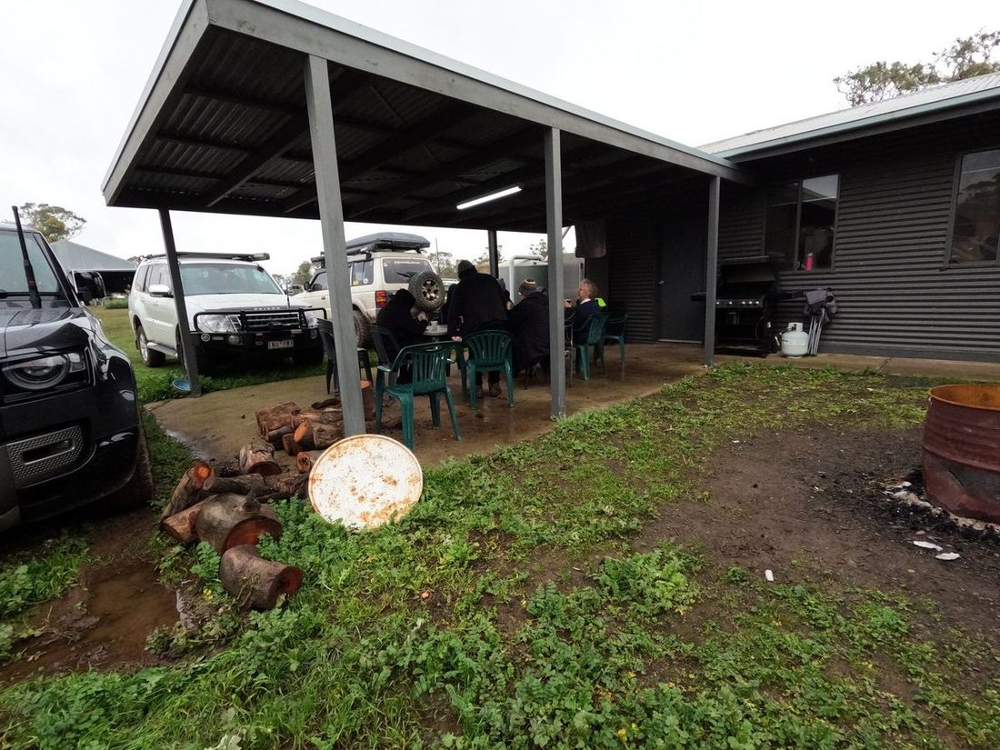
A working bee in the field. The catering trailer is out of shot, but it is doing more work than you would think. South West Goulburn Landcare Network
Glenaroua Land Management Group formed in 1988, when Landcare was just beginning. Its members live across the lower catchments of Sunday Creek, Kurkuruc Creek, Mollisons Creek and Sugarloaf Creek, and the group works on weeds, rabbits, erosion, dryland salinity and the annual tree planting. Meetings are held at the Glenaroua CFA shed on Glenaroua-Broadford Road, on the third Thursday of February, May, August and November at 6.30pm, usually with soup or a barbecue beforehand. The next meeting is 20 August.
Dabyminga Landcare Incorporated covers the Dabyminga catchment: Tallarook, Broadford, Reedy Creek and everything in between. It was formed when the Tallarook and Reedy Creek groups pooled their resources. Much of its work operates out of the Tallarook Arboretum, opposite the Mechanics Institute, and the group has maintained blackberry and woody weed control across the catchment for more than nine years. Its most recent Victorian Landcare Grant was acquitted in January 2026, reporting 18 hectares of weed control and 350 tubestock planted. Both groups are members of Landcare Victoria, which provides public liability and volunteer insurance.
The equipment is worth highlighting, because it is not general-purpose hire gear. Glenaroua maintains a spray trailer with a 500-litre tank and a four-metre boom, a tool trailer with Pottiputki and Hamilton planters and a rack of mattocks, a catering trailer, and a direct seeder. Each was purchased for a specific job, and together they expand what a landholder can realistically achieve.
Consider the direct seeder. Hand planting tubestock limits how much ground a working bee can cover in a day, but a seeder overcomes that. Direct seeding can establish more plants and more species per unit area than tubestock planting, suits large-scale projects, and produces seedlings with deeper roots. Neither method suits every situation, which is the first thing the guidelines say, but where direct seeding works it is the difference between a token row of trees and a shelterbelt long enough to sit across a prevailing wind.
Whether volunteers return next year is often decided over that barbecue.
The spray trailer matters for similar reasons, but earlier in the sequence. Whether a planting succeeds or fails is often determined before a single plant goes in the ground. Poor weed control is a leading cause of failure for direct seeding projects, and best practice is to start control at least twelve months before sowing to tackle the full annual weed cycle. A boom on a trailer allows you to do this over paddock-sized areas on your own schedule, not a contractor's.
The tool trailer and catering trailer are the unglamorous but essential side. Pottiputki planters allow planting while standing upright, making it more likely a crew will finish the paddock instead of giving up at lunch. The catering trailer feeds everyone, and whether volunteers return next year is often decided over that barbecue.
Two benefits follow from work at this scale, and one open question. The first benefit is biodiversity: revegetation in farmed country is used by native fauna, particularly birds, which are what most of the research has actually measured, and it buffers remnant patches from wind, stock and weeds. What turns up depends heavily on what is planted. The second is how the place looks: a shelterbelt on a ridge, a creek line with growth along it, a gully that has stopped moving. These change how a property looks, and that is a real reason people take the work on.
The open question is production. Windbreaks demonstrably alter airflow and the microclimate downwind of them, with measurable effects on crop yields, though the research is clear that better microclimate does not always mean better production. For pasture and wool in temperate grazing country the evidence is thinner than it is often made out to be, with few reports of increased pasture growth from shelter outside cold climates. Shelter is worth having for stock welfare and for the other two reasons above. Anyone promising you a wool premium from a windbreak is ahead of the science.
Beyond equipment, there is access to grant-funded plants and guards, help with grant applications, field days and training, and a group of people who turn up on the day. Membership is by annual subscription.
Anyone interested in joining can call me. I am happy to sit down with you to discuss what Landcare can do for you, and what you can do for Landcare. Come along to your first activity as our guest and decide afterwards.
Seedling orders close on 30 September, making the next two months our window to shape what the network does in 2027.
The committee is currently planning for 2027, but the details are not set. Some projects are already in motion: a Glenaroua planting we are seeking funding for, seedling orders that must be placed soon, and grant rounds closing before the end of October. There is still space for new ideas next year, but the only way they will happen is if someone speaks up.
So, write to me. It does not have to be a formal proposal, just share what is on your mind. Maybe it is a paddock that needs work, a gully that keeps washing out, a grant you have spotted that we might have missed, or a funder you know how to approach. Perhaps there is a piece of machinery in your shed you would lend for a working bee, or a skill you could teach: fencing, seed collecting, chainsaw work, or reading a soil test. Or maybe you remember a bird or plant that used to be here and would like to see it return.
If you are offering a resource, one question matters most: what would it take for you to make it available? People are rarely asked that, but it is usually what decides whether an offer becomes reality. Do you need a certificate of currency for your insurer? Fuel covered? Another person to help on the day? Dates that avoid harvest? Someone to tow the equipment? Or a written note about what happens if it gets damaged? Let me know your conditions and we will work with them. Vague goodwill is hard to plan for; a clear condition is easy.
The same goes for feedback. If there is something the network does badly, or something you expected from a Landcare group but have never seen offered, I want to hear that too.
Vague goodwill is hard to plan for; a clear condition is easy.
Two key dates to remember. Native seedling orders through TreeProject close on 30 September, so any planting ideas for 2027 need to reach me before then to secure stock. The next Inland Rail community funding round closes on 31 October and is the most likely source for a substantial project. Anything you submit before the end of September has a genuine chance of being included in next year's program.
Listed by article. Everything here was checked in August 2026.
1. Forty years of Landcare
Landcare Australia (2026) Landcare Through the Lens, landcareaustralia.org.au
2. The farm that isn't allowed to turn a profit
Agriculture Victoria (2026) Soil acidity, Department of Energy, Environment and Climate Action, last updated 7 April 2026, agriculture.vic.gov.au
Department of Sustainability and Environment (2008) Conservation Plan for the South West Goulburn Landscape Zone: Biodiversity Action Planning in the Upper Goulburn Broken Catchment, DSE and Department of Primary Industries, Alexandra
Prober SM, Thiele KR and Lunt ID (2002) 'Identifying ecological barriers to restoration in temperate grassy woodlands: soil changes associated with different degradation states', Australian Journal of Botany, 50(6): 699-712
3. The trees come from someone's backyard
Millton S (2024) 'TreeProject: from backyard seedlings to rural revegetation', Victorian Landcare and Catchment Management, Issue 88 (Spring 2024): 20-21
4. The two months when a fox stops moving
Agriculture Victoria (2025) Integrated fox control, Department of Energy, Environment and Climate Action, last updated 16 January 2025, agriculture.vic.gov.au
Agriculture Victoria (2026) Leghold traps, Department of Energy, Environment and Climate Action, last updated 9 July 2026, agriculture.vic.gov.au. Trap use is governed by the Prevention of Cruelty to Animals Regulations 2019
Agriculture Victoria (2025) Invasive plant classifications, last updated 20 October 2025, agriculture.vic.gov.au
Carter A, Luck GW and McDonald SP (2012) 'Ecology of the red fox (Vulpes vulpes) in an agricultural landscape. 2. Home range and movements', Australian Mammalogy, 34(2): 175-187
Coman BJ, Robinson J and Beaumont C (1991) 'Home range, dispersal and density of red foxes (Vulpes vulpes L.) in central Victoria', Wildlife Research, 18(2): 215-223
Department of Energy, Environment and Climate Action (2024) Directions for the Use of 1080 and PAPP Pest Animal Bait Products in Victoria, State of Victoria, October 2024
McLeod LJ, Saunders GR, McLeod SR, Dawson M and van de Ven R (2010) 'The potential for participatory landscape management to reduce the impact of the red fox (Vulpes vulpes) on lamb production', Wildlife Research, 37(8): 695-701
Mitchell Shire Council (2024) Cat curfew, last updated 19 December 2024, mitchellshire.vic.gov.au
Newsome TM, Crowther MS and Dickman CR (2014) 'Rapid recolonisation by the European red fox: how effective are uncoordinated and isolated control programs?', European Journal of Wildlife Research, 60(5): 749-757
Robley A, Gormley AM, Forsyth DM and Triggs B (2014) 'Long-term and large-scale control of the introduced red fox increases native mammal occupancy in Australian forests', Biological Conservation, 180: 262-269
Sharp T (2016) NATSOP-FOX003 National Standard Operating Procedure: Ground shooting of foxes, PestSmart, Centre for Invasive Species Solutions
Sharp T (2016) NATSOP-FOX005 National Standard Operating Procedure: Trapping of foxes using padded-jaw traps, PestSmart, Centre for Invasive Species Solutions
5. Deer are the only large feral animal Victoria still protects
Agriculture Victoria (2025) Invasive species laws and the Catchment and Land Protection Act 1994, last updated 8 December 2025, agriculture.vic.gov.au
Agriculture Victoria (2025) Integrated rabbit control, last updated 15 January 2025, agriculture.vic.gov.au
Bradshaw CJA, Hoskins AJ, Haubrock PJ, Cuthbert RN, Diagne C, Leroy B, Andrews L, Page B, Cassey P, Sheppard AW and Courchamp F (2021) 'Detailed assessment of the reported economic costs of invasive species in Australia', NeoBiota, 67: 511-550
Centre for Invasive Species Solutions (2012) Economic and environmental impacts of rabbits in Australia, PestSmart factsheet
Cleeland A (2026) State Government neglect fuels rabbit infestations across regional public land, media release, 19 January 2026
Department of Energy, Environment and Climate Action (2023) Flora and Fauna Guarantee Act 1988 Potentially Threatening Processes List, May 2023. The sambar listing dates from 13 March 2007
Department of Energy, Environment and Climate Action (2025) Victorian Government Response to the Wildlife Act Review, State of Victoria, released 17 October 2025
'Crucial services cut at Parks Victoria', Farmer News, 2 January 2025
Frontier Economics (2022) Counting the doe: an analysis of the economic, social and environmental cost of feral deer in Victoria, report prepared for the Invasive Species Council, June 2022
Invasive Species Council (2022) Counting the doe; feral deer could cost Victoria over $2 billion, media release, 10 June 2022
McLeod R (2023) Annual Costs of Feral Deer in Australia, eSYS Development Pty Ltd for the Centre for Invasive Species Solutions, Canberra
Mutze GJ (1991) 'Long-term effects of warren ripping for rabbit control in semi-arid South Australia', The Rangeland Journal, 13(2): 96-106. The warren-to-sheep equivalence is drawn from the Centre for Invasive Species Solutions factsheet above, which cites this paper
National Feral Deer Action Plan Working Group (2023) National Feral Deer Action Plan 2023-28, Government of South Australia, Adelaide
Victoria, Parliamentary Debates, Legislative Council, 17 June 2026, 2288 (Gaelle Broad, Northern Victoria Region), constituency question 2401
Vere DT, Jones RE and Saunders GR (2004) 'The economic benefits of rabbit control in Australian temperate pastures by the introduction of rabbit haemorrhagic disease', Agricultural Economics, 30(2): 143-155
Williams K, Parer I, Coman B, Burley J and Braysher M (1995) Managing Vertebrate Pests: Rabbits, Bureau of Resource Sciences and CSIRO Division of Wildlife and Ecology, Australian Government Publishing Service, Canberra
6. One warren eats what a sheep eats
Agriculture Victoria (2025) Integrated rabbit control, last updated 15 January 2025, agriculture.vic.gov.au
Agriculture Victoria (2026) Agricultural chemical user permit, last updated 30 June 2026, agriculture.vic.gov.au
Agriculture Victoria (2026) 1080 and PAPP animal bait, last updated 5 August 2026, agriculture.vic.gov.au
Agriculture Victoria (2023) RHDV1 K5 in Victoria, last updated 14 December 2023, agriculture.vic.gov.au
Centre for Invasive Species Solutions (2012) Economic and environmental impacts of rabbits in Australia, PestSmart factsheet
PestSmart (undated) European rabbits toolkit, Centre for Invasive Species Solutions, pestsmart.org.au. RabbitScan is at feralscan.org.au
Sharp T (2016) NATSOP-RAB008 National Standard Operating Procedure: Ground shooting of rabbits, PestSmart, Centre for Invasive Species Solutions
Victorian Rabbit Action Network, vran.com.au
7. Serrated tussock: act before it seeds
Agriculture Victoria (2025) Serrated tussock, Department of Energy, Environment and Climate Action, last updated 2 December 2025, agriculture.vic.gov.au
Agriculture Victoria (2025) Invasive plant classifications, last updated 20 October 2025, agriculture.vic.gov.au
Campbell MH and Vere DT (1995) 'Nassella trichotoma (Nees) Arech.', in Groves RH, Shepherd RH and Richardson RG (eds) The Biology of Australian Weeds, Volume 1, R.G. and F.J. Richardson: 189-202. The carrying capacity figures are as reported by the Victorian Serrated Tussock Working Party
Victorian Serrated Tussock Working Party, serratedtussock.com, identification, life cycle and chemical control pages
9. Farmers' petition reaches the Council chamber
Protect Our Farms Inc (2026) Protect Our Farms Support for an Agricultural Advisory Committee, address to Mitchell Shire Council, 6 July 2026. The shire statistics quoted are the group's own, compiled from REMPLAN and Australian Bureau of Statistics data to 30 June 2025
Thompson M (2026) 'Agricultural committee petitioned', The North Central Review, 7 July 2026
Urban Enterprise (2019) Mitchell Shire Rural Economy Profile, prepared for Mitchell Shire Council, February 2019
10. What Glenaroua and Dabyminga can offer your property
Bird PR (1998) 'Tree windbreaks and shelter benefits to pasture in temperate grazing systems', Agroforestry Systems, 41(1): 35-54
Cleugh HA (1998) 'Effects of windbreaks on airflow, microclimates and crop yields', Agroforestry Systems, 41(1): 55-84
Gibson-Roy P, Zwiersen T, Millsom D, Driver M, Berryman T, Logie S and Carr D (2021) 'Module 14: Direct Seeding', in Commander LE (ed.) Florabank Guidelines: best practice guidelines for native seed collection and use, 2nd edition, Florabank Consortium
Munro NT, Lindenmayer DB and Fischer J (2007) 'Faunal response to revegetation in agricultural areas of Australia: a review', Ecological Management and Restoration, 8(3): 199-207
Useful places to start
Virtual Extension Officer, a free interactive tool covering gorse, serrated tussock and rabbits, tailored to nine landscape types.